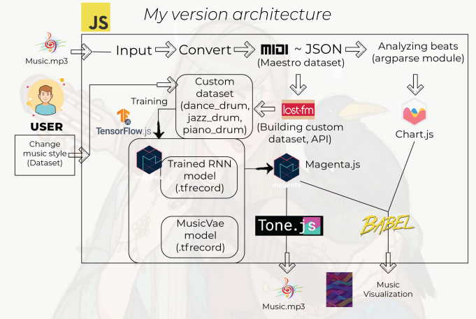

► RAIS HELMY CD3 BI17210297 ◄
UMS AI Cloud Music Generation using Tensorflow
► What is AI Cloud Music Generation? ◄
► Abstract ◄
...
► Software Architecture ◄
Logical side of application
The Application consist of:
- ► Front End (HTML, CSS, JS)
► Back End (JS, TENSORFLOW)
► Deployment (Github pages)
This is architecture from MuseNet open AI

This is architecture from Me open AI
► HERE IT'S AI CLOUD MUSIC GENERATION ◄